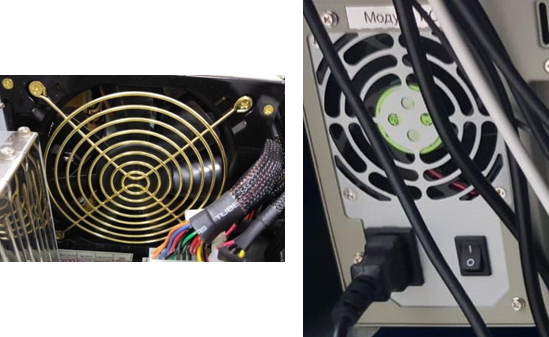

2. Условия производства работ
2.1. Внутреннюю чистку системного блока, проверку состояния вентилятора и фильтра системного блока следует проводить во время нахождения автоматизированного рабочего места поездного диспетчера (далее – АРМ ДНЦ), станции связи или шлюз-сервера стойки поста ДЦ в выключенном состоянии.
ВНИМАНИЕ. При выполнении работ на основном АРМ ДНЦ управление станциями диспетчерского круга должно осуществляется с резервного АРМ ДНЦ.
ВНИМАНИЕ: При выполнении работ на основном системном блоке станции связи и шлюз-сервера стойки поста ДЦ передача данных для управления станциями диспетчерского круга должна осуществляться с резервной станции связи и шлюз-сервера стойки поста ДЦ.
2.2. Работа производится электротехническим персоналом, имеющим группу по электробезопасности при работе в электроустановках до 1000 В не ниже III, перед началом работ проинструктированным в установленном порядке.
2.3. К работе допускается обслуживающий персонал, прошедший специальную подготовку и выдержавший испытания в знаниях условий эксплуатации системы в соответствии с процедурами, принятыми в ОАО «РЖД».
2.4. Допуск на объект, оформление записей в журналах, контроль качества работ, выполняемых подрядными организациями, участие в приемке выполненных работ осуществляется эксплуатационным персоналом в соответствии с требованиями Инструкции по техническому обслуживанию и ремонту устройств и систем сигнализации, централизации и блокировки, утвержденной распоряжением ОАО «РЖД» от 30 декабря 2015 г. № 3168р.
3. Средства защиты, измерений, технологического оснащения; монтажные приспособления, испытательное оборудование, инструменты, техническая документация
Диспетчерская централизация ДЦ «Юг». Руководство по эксплуатации 36818650.39003.001-01 РЭ;
Диспетчерская централизация ДЦ «Юг». Технология обслуживания. Технологические карты по техническому обслуживанию ДЦ «Юг» на базе КП «Круг» 36818650.39003.001-01 ТО;
ткань хлопчатобумажная безворсовая;
кисть с мягким ворсом;
чистящее средство;
резиновые перчатки;
набор отверток;
пылесос электрический;
респиратор;
защитные очки;
пинцет.
Примечание. Допускается использование, разрешенных к применению, аналогов указанных выше материалов и оборудования.
4. Подготовительные мероприятия
4.1. Подготовить средства технологического оснащения, инструменты и материалы, указанные в разделе 3.
4.2. Убедиться в возможности переключения с одного АРМ ДНЦ на другой. При невозможности выполнения переключения принять меры к выяснению и устранению причин.
4.3. Убедиться в возможности переключения с одной станции связи (шлюз-сервера) стойки поста ДЦ на другую. При невозможности выполнения переключения принять меры к выяснению и устранению причин.
5. Обеспечение безопасности движения поездов
5.1. Работа производится в технологическое «окно» с согласия поездного диспетчера (далее – ДНЦ).
5.2. Работа выполняется с оформлением записи в Журнале осмотра путей, стрелочных переводов, устройств сигнализации, централизации и блокировки, связи и контактной сети формы ДУ-46 (далее – Журнал осмотра).
5.3. Для чистки системного блока АРМ (станции связи, шлюз-сервера стойки поста ДЦ) следует применять растворы, не содержащие аммиак, бензин и другие растворители.
5.4. Не допускается наносить чистящие растворы непосредственно на очищаемые поверхности, так как это может привести к их необратимым
повреждениям.
5.5. Категорически запрещается выключать одновременно оба АРМ ДНЦ, станции связи и шлюз-сервера стойки поста ДЦ.
5.6. При выполнении работы обеспечить безопасность движения в соответствии с требованиями Инструкции по обеспечению безопасности движения поездов при технической эксплуатации устройств и систем СЦБ ЦШ-530-11, утвержденной распоряжением ОАО «РЖД» от 20 сентября 2011 г. № 2055р.
Примечание. Здесь и далее по тексту целесообразно проверить действие ссылочных документов. Если ссылочный документ заменен (изменен), то при пользовании данной картой технологического процесса следует руководствоваться заменяющим (измененным) документом. Если ссылочный документ отменен без замены, то применяется та часть текста, где не затрагивается ссылка на этот документ.
6. Обеспечение требований охраны труда
6.1. При выполнении технологических операций следует руководствоваться требованиями «Инструкции по охране труда для электромеханика и электромонтера устройств сигнализации, централизации и блокировки в ОАО «РЖД» от 03 ноября 2015 № 2616р и «Правилами по охране труда при техническом обслуживании и ремонте устройств сигнализации, централизации и блокировки в ОАО «РЖД» (ПОТ РЖД-4100612-ЦШ-215-2021), утверждёнными распоряжением ОАО «РЖД» от 19 февраля 2021 г. №346/р.
ПРЕДОСТЕРЕЖЕНИЕ: Чистку системных блоков следует производить при отключенном электропитании путем изъятия штепсельной вилки провода питания из розетки, при этом запрещается выдергивать штепсельную вилку, держась за шнур для отключения оборудования от электросети.
ВНИМАНИЕ: Для внутренней очистки пластиковых корпусов используются чистящие салфетки или мягкая сухая ткань; если загрязнение сильное, то допускается применение без абразивных нейтральных очистителей, не содержащих аммиак и спирт.
ВНИМАНИЕ: Внутренняя чистка системного блока выполняется в хорошо вентилируемом помещении. Категорически запрещается выполнение данной работы в помещении ДНЦ. При выполнении работы использовать средства индивидуальной защиты: респиратор, резиновые перчатки и защитные очки
7. Технология выполнения работ
7.1. Общий порядок внутренней чистки системного блока. Проверка состояния вентилятора и фильтра системного блока.
Внешний вид стойки поста ДЦ с системными блоками представлен на рисунке 1, в АРМ ДНЦ применяются аналогичные системные блоки.
Рисунок 1. Внешний вид шкафа.
7.1.1. Оформить запись в Журнале осмотра.
Пример записи:
В технологическое «окно» специалистами сервисной организации будет для проведения работы по внутренней чистке, проверке состояния вентилятора и фильтра основного (резервного) системных блоков рабочих мест АРМ ДНЦ (станции связи, шлюз-сервера стойки поста ДЦ), АРМ ШН будет произведено переключение АРМ ДНЦ (станции связи, шлюз-сервера стойки поста ДЦ) на работу с резервного системного блока.
ШНД
ДНЦ
7.1.2. Провести переключение активности с основного АРМ ДНЦ (станции связи, шлюз-сервера стойки поста ДЦ) на резервный согласно ТНК ЦШ 0197-2016. Вид системного блока представлен на рисунке 2.
Рисунок 2. Системный блок АРМ ДНЦ (станции связи, шлюз-сервера стойки поста ДЦ).

Ключ на лицевой панели системного блока
7.1.3. Специальным ключом открыть крышку на лицевой панели системного блока (Рисунок 2).
7.1.4. Отключить питание на лицевой и задней панели системного блока, изъять вилку шнура для подключения питания 220В из блока розеток 220В и системного блока (Рисунок 3).
Рисунок 3. Отключение питания системного блока.
Отключение питание на лицевой панели
Шнур внешнего питания

Отключение питание на задней панели
Отключение вилки шнура питания на блоке розеток 220В
7.1.5. Отключить от системного блока: клавиатуру, манипулятор типа «мышь», монитор и принтер, кабели связи (Рисунок 4).
Рисунок 4. Отключение кабелей от системного блока.
Кабель принтера
Кабели манипулятора «мышь», клавиатуры, монитора
Кабели связи
7.1.6. Отвернуть шлицевой отверткой болты крепления системного блока в шкафу и изъять системный блок из посадочного места.
7.1.7. Отвернуть шлицевой отверткой болты на правой и левой боковинах системного блока и снять верхнюю крышку (Рисунок 5).
Рисунок 5. Болтовое крепление крышки системного блока.
Крепление верхней крышки системного блока слева, аналогично справа
7.1.8. Надеть респиратор, резиновые перчатки и защитные очки.
7.1.9. Отвернуть шлицевой отверткой болты и снять планку (Рисунок 6), дополнительно удерживающую печатные платы и блок питания от разного рода колебаний и исключающую возможность потери контакта платы с интерфейсом.
Рисунок 6. Планка дополнительного крепления плат.
7.1.10. Произвести очистку наружного фильтра, расположенного на лицевой панели системного блока, посадочного места, в котором он установлен с помощью ткани хлопчатобумажной и чистящего средства (Рисунок 7).
Рисунок 7. Очистка фильтра.
Место расположения фильтра на лицевой панели
Фильтр на лицевой панели
7.1.11. Установить очищенный фильтр обратно.
ВНИМАНИЕ: При необходимости провести замену фильтра.
7.1.12. Произвести очистку вентилятора, установленного с обратной стороны фильтра, расположенного на лицевой панели системного блока с помощью пылесоса. Для этого необходимо отвернуть один или два болта крепления, отсоединить разъем питания, вынуть, потянув вверх а направляющие (Рисунок 8).
Рисунок 8. Очистка вентилятора.
Направляющие вентилятора
Крепление вентилятора
Вентилятор
ПРИМЕЧАНИЕ: В случае ненормальной работы вентилятора, например, неравномерного вращения, недостаточной скорости вращения, повышенного шума, сильной загрязнённости вентилятор подлежит замене.
7.1.13. Произвести очистку устройства для чтения дисков и места его установки с помощью чистящей салфетки; с помощью кисти с мягким ворсом очистить провода, к нему подключенные (Рисунок 9).
Рисунок 9. Устройство чтения дисков и провода.
Устройство чтения дисков
Провода
7.1.14. Произвести очистку вентилятора, установленного на блоке питания с помощью пылесоса, как с внутренней стороны системного блока, так и с наружной стороны (Рисунок 10).

Рисунок 10. Вентилятор блока питания.
7.1.15. Провести очистку всех плат, проводов и посадочных мест с помощью пылесоса, стенки блока очистить с помощью ткани хлопчатобумажной и чистящего средства (Рисунок 11).
Рисунок 11. Платы, посадочные места и провода системного блока.
Плата
Посадочное место
Провода
Посадочное место
Плата
Посадочное место
Провода
7.1.16. Провести внутренний осмотр блока на наличие в нем упавших посторонних предметов (винтов, гаек и тому подобных) и надежности установки плат в разъемах. Обнаруженные предметы удалить (в труднодоступных местах – пинцетом), а платы, сдвинутые вследствие вибрации со своих мест, надежно зафиксировать в соответствующих разъемах.
7.1.17. Установить планку и завернуть болты крепления.
7.1.18. Установить верхнюю крышку, завернуть шлицевой отверткой болты на правой и левой боковинах системного блока.
7.1.19. Снять респиратор, резиновые перчатки и защитные очки.
7.1.20. Установить системный блок в посадочное место и завернуть шлицевой отверткой болты крепления системного блока в шкафу.
7.1.21. Подключить к системному блоку клавиатуру, мышь, монитор, принтер, кабели связи.
7.1.22. Вставить шнур для подключения питания 220В в системный блок, затем в блок розеток 220В, включить питание сначала на задней, затем на лицевой панели системного блока.
7.1.23. Закрыть специальным ключом крышку на лицевой панели системного блока.
7.1.24. Провести внутреннюю чистку системного блока основного Сервера в соответствии с пунктами 7.1.3-7.1.23.
7.1.25. Проверить правильность работы системных блоков, для чего ДНЦ необходимо выполнить переход управления на основной (резервный) АРМ ДНЦ (станции связи, шлюз-сервера стойки поста ДЦ) согласно ТНК ЦШ 0197-2016. В случае успешного перехода и управления станциями с АРМ ДНЦ (станции связи, шлюз-сервера стойки поста ДЦ), на которых была проведена внутренняя чистка, перейти к пункту 7.1.26.
7.1.26. Провести внутреннюю чистку системных блоков резервного АРМ ДНЦ (станции связи, шлюз-сервера стойки поста ДЦ), АРМ ШН в соответствии с пунктами 7.1.3-7.1.23.
ВНИМАНИЕ: Производить внутреннюю чистку следующего системного блока АРМ (станции связи, шлюз-сервера стойки поста ДЦ) разрешается только после проверки нормального действия АРМ (станции связи, шлюз-сервера стойки поста ДЦ), на котором была проведена внутренняя чистка системного блока.
7.1.27. По окончанию работы сделать запись в Журнале осмотра.
Пример записи:
Внутренняя чистка, проверка состояния вентилятора и фильтра основного (резервного) системных блоков рабочих мест АРМ ДНЦ (станции связи, шлюз-сервера стойки поста ДЦ), АРМ ШН специалистами сервисной организации завершена. Устройства проверены, работают нормально.
ШНД
ДНЦ
8. Заключительные мероприятия, оформление результатов работы
После окончания внутренней чистки системного блока, проверки состояния вентилятора и фильтра системного блока оповестить ДНЦ об окончании работы, сделать запись в журнале ШУ-2 о проведенной работе и внести результаты выполнения работы в систему ЕК АСУИ в соответствии с требованиями, изложенными в разделе 4 «Порядка планирования, учета и контроля выполнения работ в хозяйстве автоматики и телемеханики», утверждённого распоряжением ОАО «РЖД» от 13 января 2020 г. №20/р.
Результаты работы специализированная организация оформляет в журнале учета выполненных работ по техническому обслуживанию и ремонту устройств и систем ЖАТ по форме, представленной в регламенте взаимодействия между участниками процесса технического обслуживания и ремонта систем и устройств железнодорожной автоматики и телемеханики ОАО «РЖД», осуществляемых специализированными организациями, утвержденном распоряжением ОАО «РЖД» от 30 декабря 2017 г. № 2827р.
Начальник отдела ПКБ И
Конструктор 1 категории ПКБ И
Е.Н. Иванов
В.В. Харламов